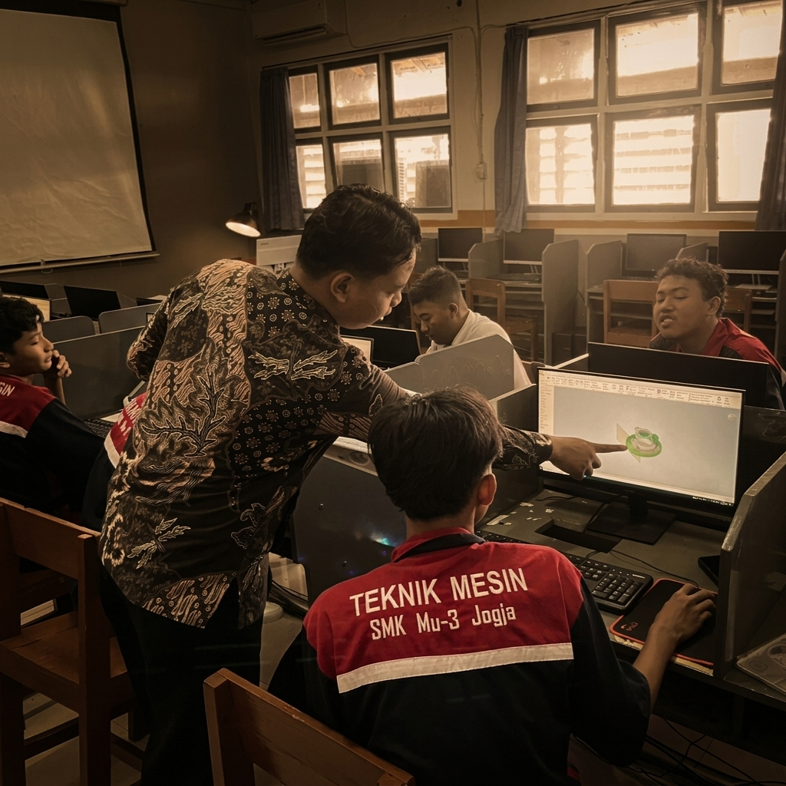
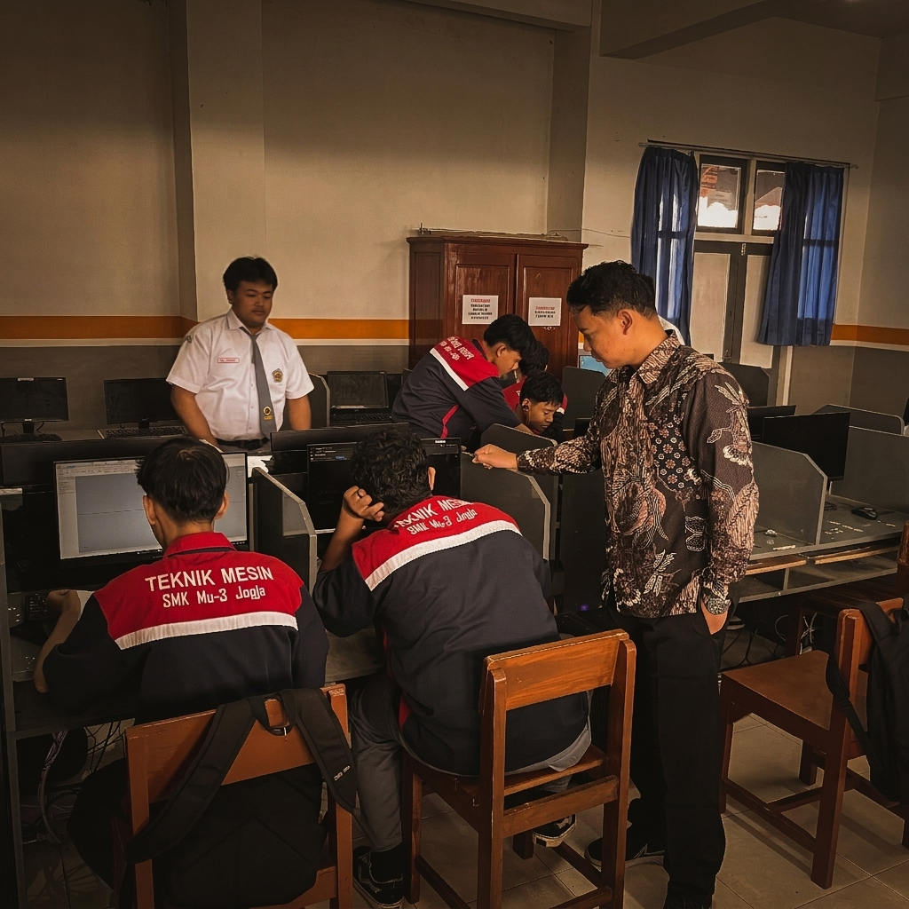
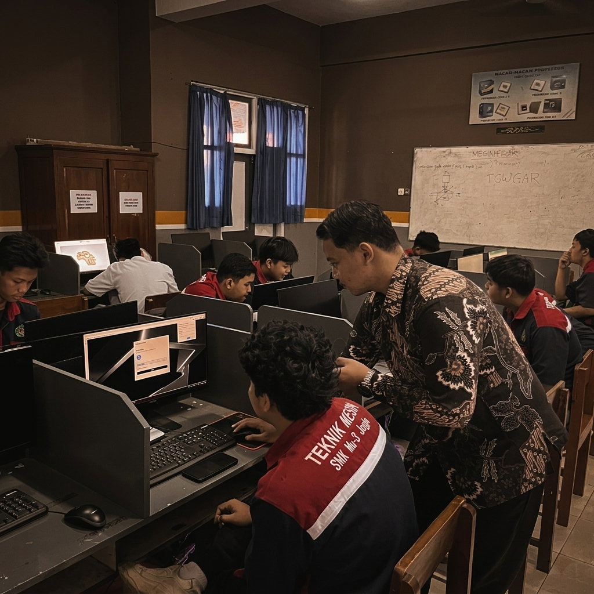
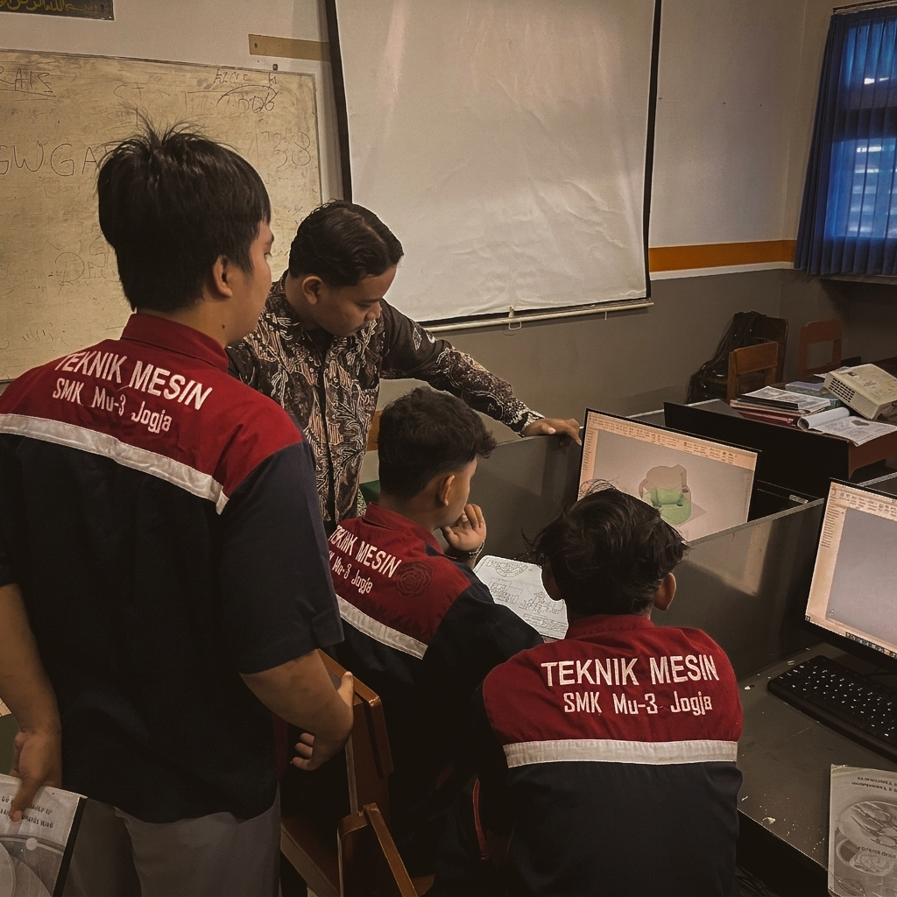
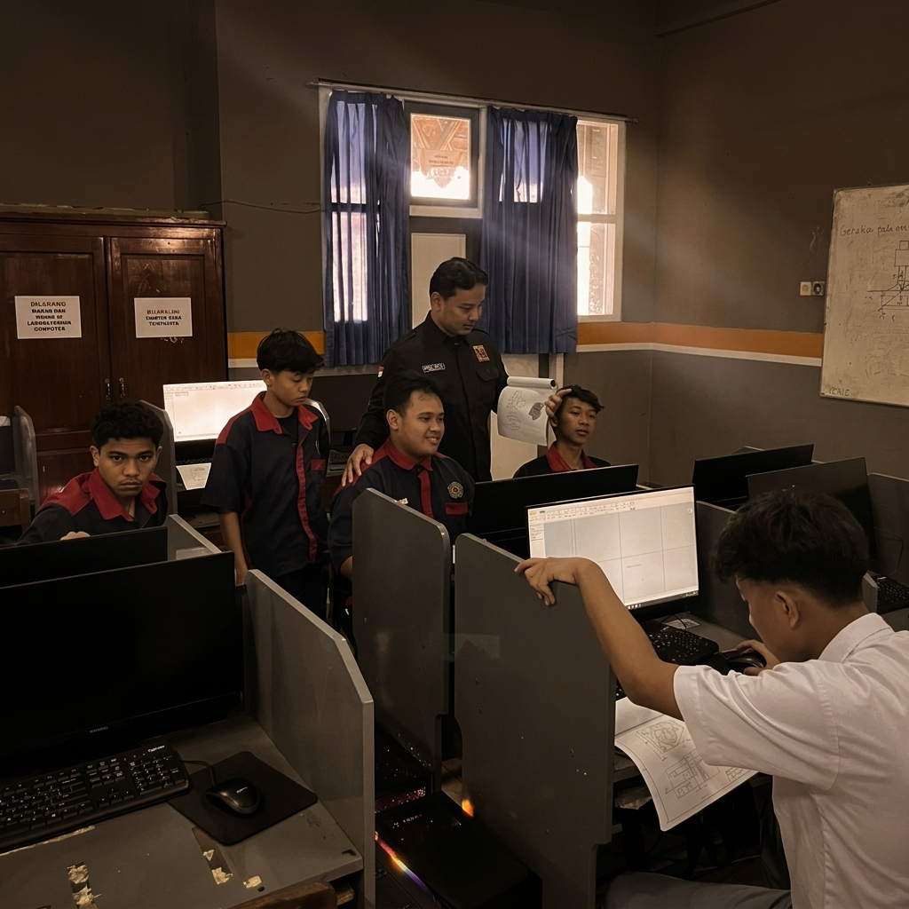
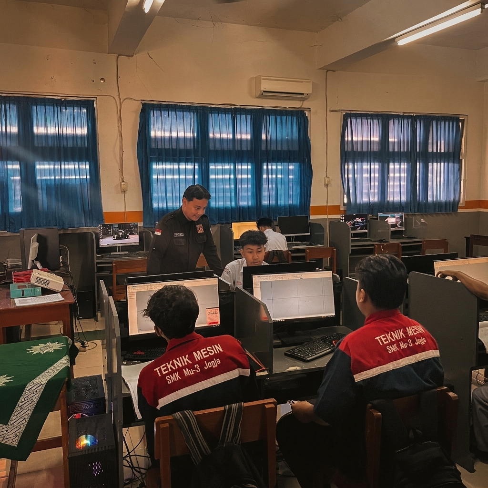

Instrumen Penilaian
Dokumentasi Praktik Mengajar
Siklus 1: Observasi & Pendampingan
Materi: Pengenalan Fitur 2D dan 3D Autodesk Inventor


Siklus 2: Pengajaran Terbimbing
Materi: Pembuatan Part 3D Sederhana Autodesk Inventor


Siklus 3: Pengajaran Mandiri
Materi: Pembuatan Assembly Autodesk Inventor

